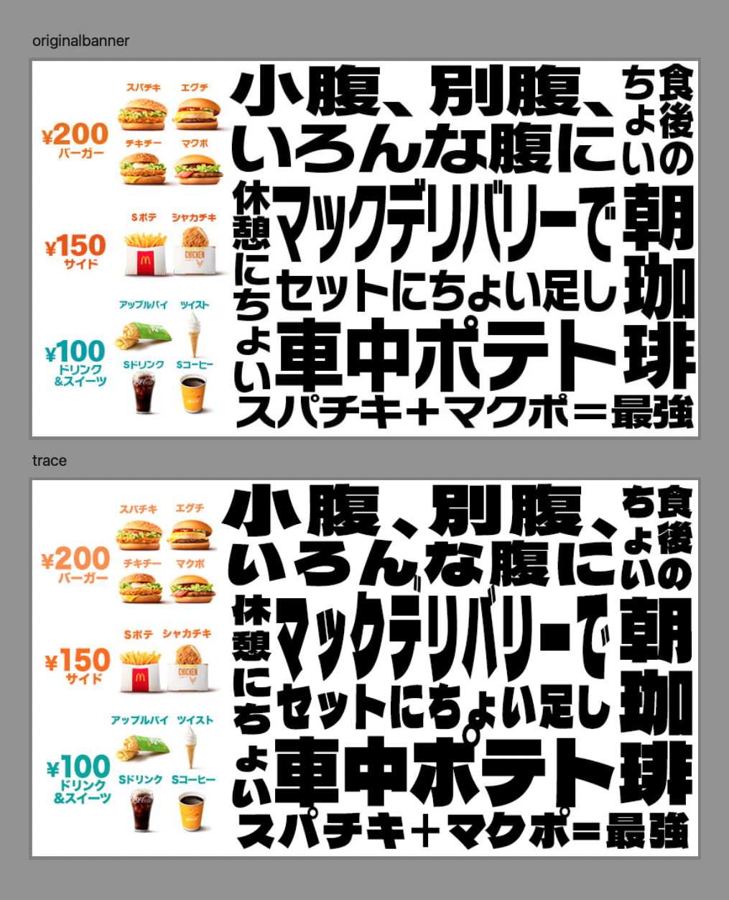
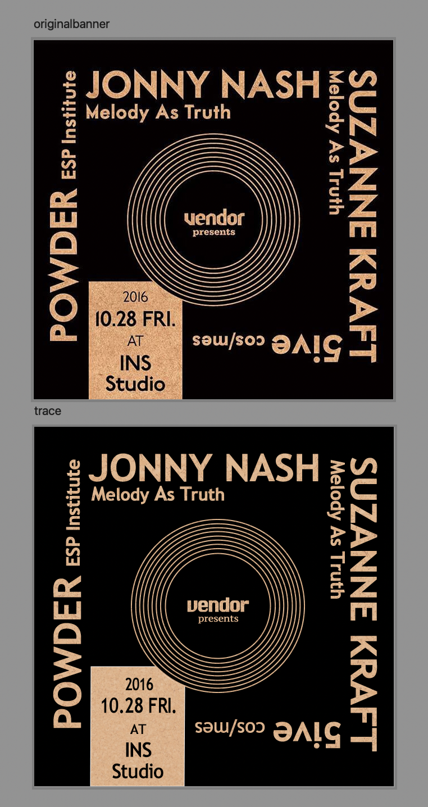
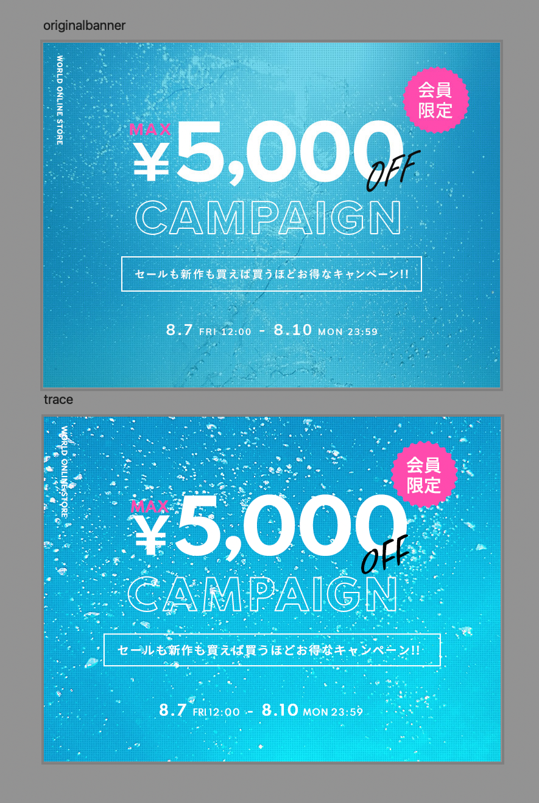
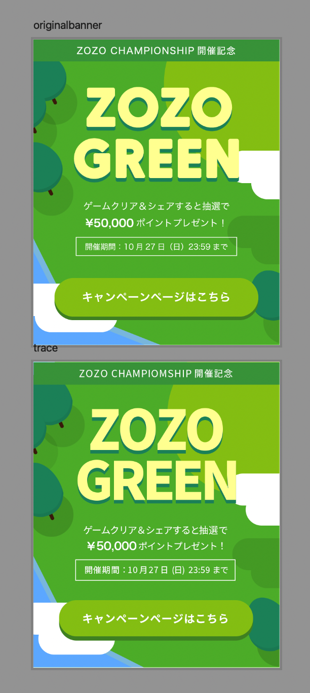
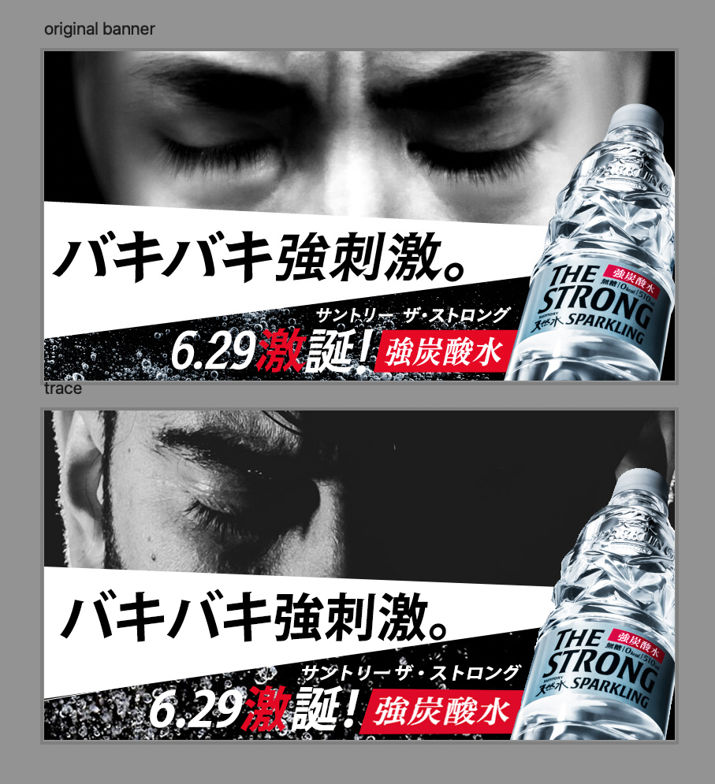
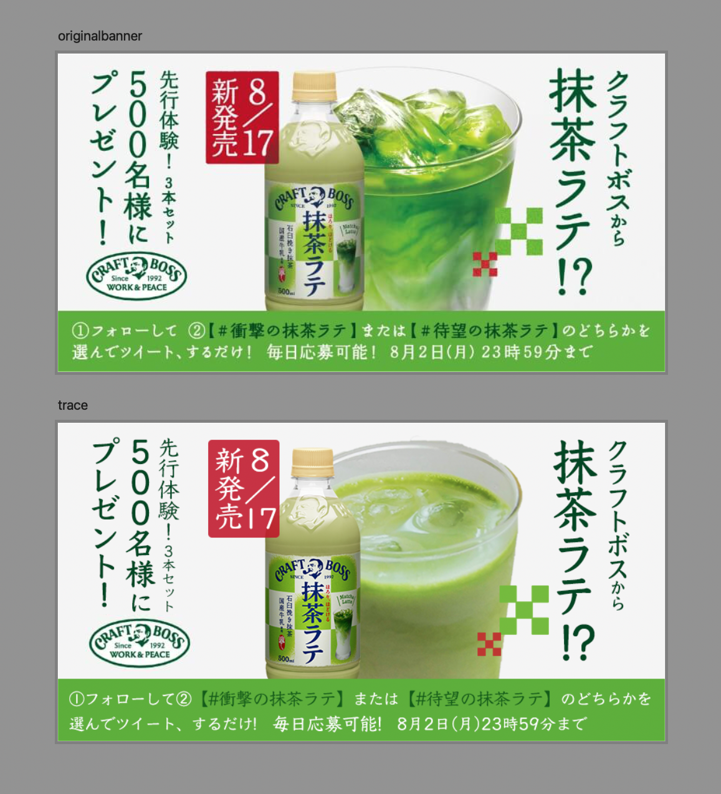
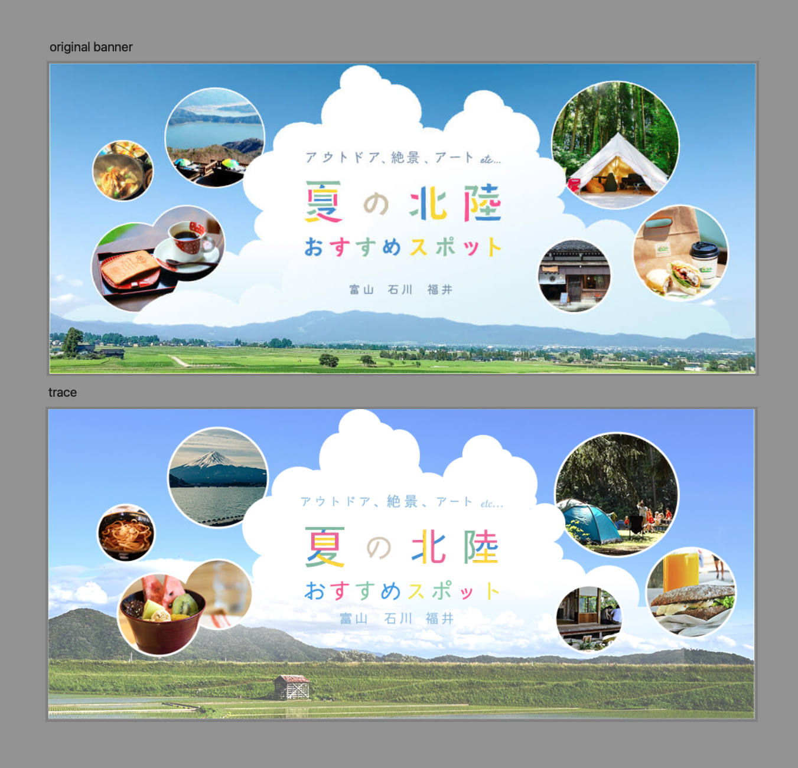
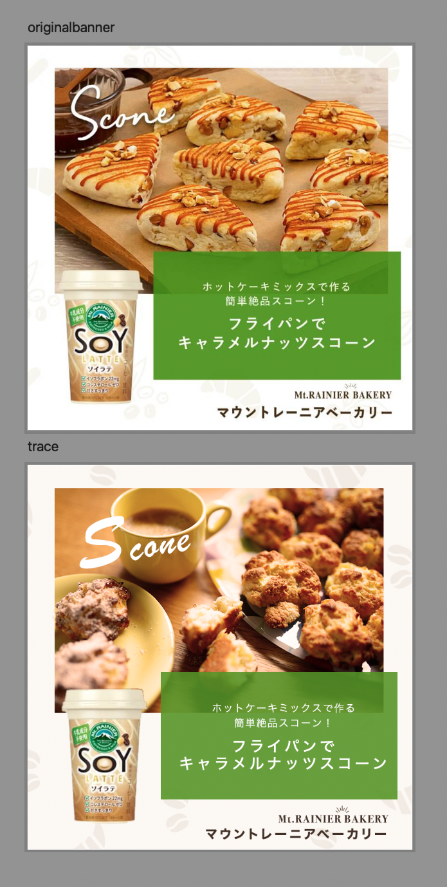

MENU
T
O
P
W
O
RKS
stylist Edward
なっとう屋 Online shop
Portfolio
PRACTICE
C
O
NTACT
PRACTICE

note
バナートレース(食品)
Tools
Photoshop
Techniques
テキストのカーニング
Note
オリジナルのバナーは、文字で埋め尽くされているように見えるが、書体の線の太さが一定なので適度な隙間があり、文字が読みやすくなっている

note
バナートレース(音楽イベント)
Tools
Photoshop
Techniques
パスのオフセットで同心円を描く
長方形と円をパスファインダーで重なり部分を削除
Note
書体の仮想ボディの大きさ、形が統一されているものを使用していることにより、正方形の辺が整いスッキリしている

note
バナートレース(アパレル)
Tools
Photoshop
Techniques
水泡の背景画像に、水玉のパターンオーバーレイをかけてドット柄を再現
テキストに境界線のレイヤー効果を足し、塗り設定で枠線のみの文字を作成
多角形ツールで角の多いスターを描き、角を滑らかにする
Note
(他のセールなどのバナーなどの傾向も踏まえて)数字が含まれるバナーは数字を最も大きくし、「%」や「OFF」は小さくてもよい。

note
バナートレース(EC)
Tools
Photoshop
Techniques
文字、背景、木にドロップシャドウで影をつける
木の影は不透明度を下げた円を重ねて作成
雲と雲の影は、長方形のコーナーを丸めて作成
Note
キャンペーンの説明よりページへリンクするボタンの方が目立つようにデザインされているため、キャンペーンページまでの動線がわかりやすい

note
バナートレース(飲料)
Tools
Photoshop
Techniques
テキスト部分の背景は、パスをシェイプにしてクリッピングマスク
テキストのバウンティングボックスを歪めて文字を斜体にする
Note
画像を選択する際、「目を閉じている」など見た目を表すキーワードで検索したが見つからず→「男性 集中」など状態を表すキーワードに変えて検索

note
バナートレース(飲料)
Tools
Photoshop
illustrator
Techniques
illustratorで装飾を作成
Note
商品ラベルの模様を装飾に使用することによって、全体としてのまとまりが出る

note
バナートレース(旅行)
Tools
Photoshop
Techniques
円形のシェイプを重ねて一つの雲を作成
「夏の北陸」はテキストレイヤーを重ねて、ラスタライズしブラシで一画ごとに色を塗る
Note
背景画像、枠内の画像、フォントのトーンを統一することによって、素材が多くても一体感を出す
円形の枠線、雲のシェイプを白で統一することによって、全体としてのトーンアップ

note
バナートレース(飲料)
Tools
Photoshop
Techniques
パターン定義で背景の模様を作成
スコーンの画像に、温かさを出すためレンズフィルターをかけ、明るさ調整
Note
パッケージデザインの配色の比率とバナー全体とを合わせることによって統一感が生まれる